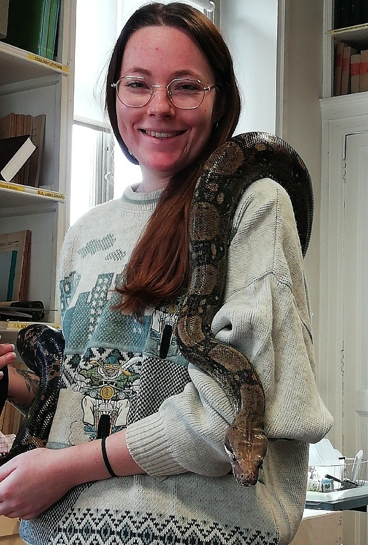

Médiation & vulgarisation
Partager la démarche scientifique et la curiosité pour le vivant avec tous les publics.
Compétences clés
- Communication & vulgarisation
- Communication orale
- Pédagogie & accompagnement
- Mentorat
- Rédaction grand public
- Création visuelle (Illustrator, Inkscape, Sketchbook)
- Montage vidéo (iMovie)
Mon parcours en médiation & vulgarisation
Cliquez sur une catégorie pour n'afficher qu'elle, puis à nouveau pour tout revoir. Survolez un élément de la frise pour en voir le détail. Frise complète sur la page CV.
- Savanturiers
- Beauval Nature mag
- Déclics
- The Conversation
- Doctorat MNHN
- Animatrice
- Chargée de TP
- Animatrice
- Animatrice
Médiation & mentorat
Médiation scientifique pour lycéens via le Cercle FSER (Déclics, 12/2023, 4h) et mentorat via le Programme Savanturiers de l'AFPER (03–05/2022). Vulgarisation de la démarche scientifique et accompagnement personnalisé de jeunes.
Compétences mobilisées
Articles de vulgarisation
Elephants use the tips of their trunks to grasp things with great precision – how this can help robotic design
The Conversation · 20 juin 2024
Lire l'articleLa trompe de l'éléphant : un outil de haute précision
Beauval Nature mag, 5, 87–89 · 2023